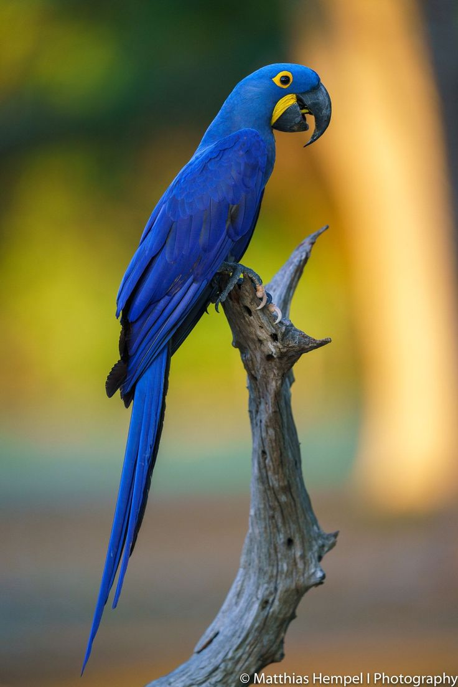

Ararinha-azul
Cyanopsitta spixii
Menos Preocupante (LC)Cada espécie perdida é uma história que nunca mais será contada.
Este portal nasceu da necessidade de democratizar o acesso aos dados de conservação da biodiversidade brasileira. Através de visualizações interativas, buscamos sensibilizar a sociedade sobre o estado crítico de nossas espécies e incentivar políticas públicas de proteção ambiental.
Escolha produtos com certificação ambiental e evite o desperdício.
Apoie leis que combatem o desmatamento ilegal e protegem nossos biomas.
Contribua com registros de fauna em plataformas de monitoramento biológico.

Projeto inspirado no ICMBio, 2026. Sistema de Avaliação do Risco de Extinção da Biodiversidade – SALVE. Disponível em: https://salve.icmbio.gov.br/. Acesso em: 22 de mar. de 2026.